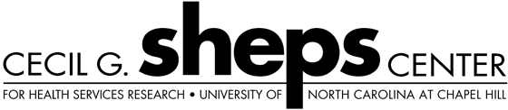

| data |
| home page |
| org HylaFAX is a trademark of Silicon Graphics Corporation. . The software is designed around a client-server architecture. Fax modems may reside on a single machine on a network and clients can submit an outbound job from any other machine on the network. Client software is designed to be lightweight and easy to port. |
|
. Application Deployment Information Center - Links and information on all application deployment methods- installers, deployment, imaging and more. Message boards, script exchange, articles, the information and utilities you need to remotely install software. Your system software can be re-structured to meet your individual business needs. - Develops, markets and supports applications management products for Windows NT and UNIX. |
|  | QCD-API (Application Programming Interface) documents. .3821 The SZIN Software System The SZIN software system (SZIN is color in Hungarian) supports data-parallel programming constructs for lattice field theory and in particular lattice QCD. Major new release with significantly enhanced primitive level structure within the macro type system. What this means is that objects are treated as their proper mathematical types to facilitate spectroscopy. |